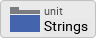
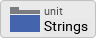

Adding a language switcher
In the last chapter, we added German as second language to the project and created five localizable language strings. Using these language strings, we replaced all hard-coded text strings in the textual elements of our GUI components. That’s great, our application is localized now. However, currently the user does not have the possibility to change the language of the user interface. We will change this in the next lesson by adding a language switcher to the application.
Adding the resources for the language switcher
Our language switcher will be quite simple: we will place a English and a German flag side by side in the upper right corner of the application window. Once the user clicks on a flag the language will be changed.
First we store the needed image icons inside the project:
{kind=link}
{kind=link}
Adding the flag bitmap resources
Now that we have the two icons available, we will make use of them and create two graphical bitmap resources inside our project. We will put these resources inside a new unit Icons so let’s go ahead and add the unit first and the two flag bitmap resources afterwards:
-
Click on the
 Project tab (the first tab from the left).
Project tab (the first tab from the left). -
Identify the note frame with the caption GUI project, it currently contains the icon
 representing the Application unit and the icon  representing the Strings unit.
representing the Application unit and the icon  representing the Strings unit. -
From the gallery templates window to the left, drag the element
 Unit inside the Chora folder over to the canvas and place it underneath the existing Strings unit. Rename the unit to Icons.
Unit inside the Chora folder over to the canvas and place it underneath the existing Strings unit. Rename the unit to Icons. -
Double click on the newly inserted unit
 . Inside the composer window, a new tab Icons appears which shows the currently empty unit.
. Inside the composer window, a new tab Icons appears which shows the currently empty unit. -
From the gallery templates window to the left, drag the element
 Annotation Group, over to root canvas. Rename the group to Flags.
Annotation Group, over to root canvas. Rename the group to Flags. -
From the gallery templates window to the left, drag the element Bitmap Resource inside the Resources folder over to the canvas and place it inside the just inserted annotation group. Rename the constant to FlagUK.
-
In the inspector window, change the property FileName of the newly inserted bitmap resource to .\Flags\uk.png. You may either type in the path and filename directly or you can make use of the file chooser that gets invoked one you click at the symbol … located at the right end of the row.
-
From the gallery templates window to the left, drag another Bitmap Resource element over to the canvas. Rename the constant to FlagGermany.
-
Change the property FileName of the newly inserted bitmap resource to .\Flags\de.png.
Building a pushbutton flag component
With the resources available, we now can build a reusable pushbutton flag component that will be used inside the language switcher component later on:
-
We want to place the push button component in the Application unit, so we have to invoke this unit first: click on the
Project tab and double click on the Application unit to open the corresponding composer tab. Inside the tab, you should now see the Application root component and the Pushbutton component, built by you. -
From the gallery templates window to the left, drag the element
Annotation Group, over to root canvas. Rename the group to Language selector. -
…